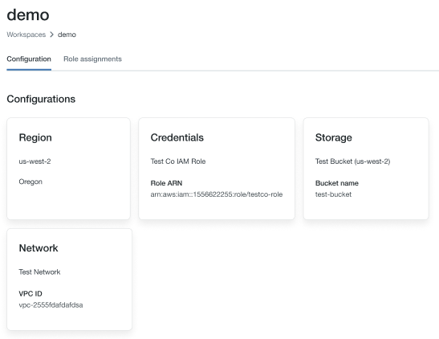
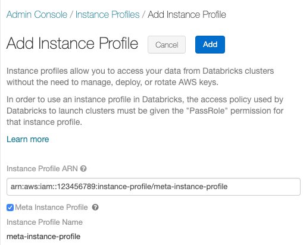
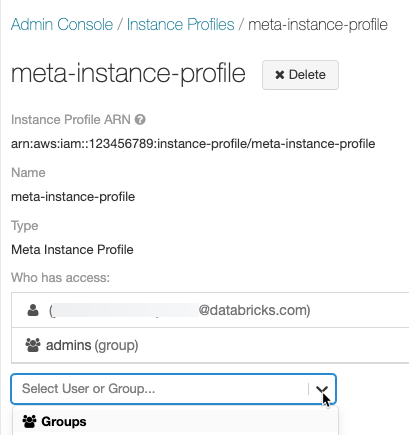
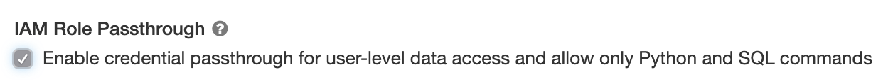
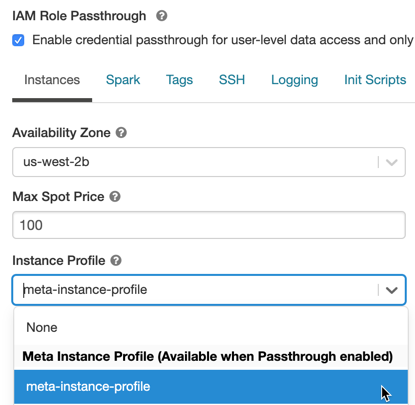
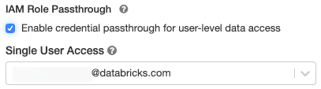

Access S3 with IAM credential passthrough with SCIM (legacy)
Important
This documentation has been retired and might not be updated.
IAM credential passthrough is a preview legacy data governance model and it will not become generally available (GA). Databricks recommends that you upgrade to Unity Catalog. Unity Catalog simplifies security and governance of your data by providing a central place to administer and audit data access across multiple workspaces in your account. See What is Unity Catalog?.
IAM credential passthrough allows you to authenticate automatically to S3 buckets from Databricks clusters using the identity that you use to log in to Databricks. When you enable IAM credential passthrough for your cluster, commands that you run on that cluster can read and write data in S3 using your identity. IAM credential passthrough has two key benefits over securing access to S3 buckets using instance profiles:
IAM credential passthrough allows multiple users with different data access policies to share one Databricks cluster to access data in S3 while always maintaining data security. An instance profile can be associated with only one IAM role. This requires all users on a Databricks cluster to share that role and the data access policies of that role.
IAM credential passthrough associates a user with an identity. This in turn enables S3 object logging via CloudTrail. All S3 access is tied directly to the user via the ARN in CloudTrail logs.
Requirements
AWS administrator access to:
IAM roles and policies in the AWS account of the Databricks deployment.
AWS account of the S3 bucket.
Databricks administrator access to configure instance profiles.
Set up a meta instance profile
In order to use IAM credential passthrough, you must first set up at least one meta instance profile to assume the IAM roles that you assign to your users.
An IAM role is an AWS identity with policies that determine what the identity can and cannot do in AWS. An instance profile is a container for an IAM role that you can use to pass the role information to an EC2 instance when the instance starts. Instance profiles allow you to access data from Databricks clusters without having to embed your AWS keys in notebooks.
While instance profiles make configuring roles on clusters very simple, an instance profile can be associated with only one IAM role. This requires all users on a Databricks cluster to share that role and the data access policies of that role. However, IAM roles can be used to assume other IAM roles or to access data directly themselves. Using the credentials for one role to assume a different role is called role chaining.
IAM credential passthrough allows admins to split the IAM role the instance profile is using and the roles users use to access data. In Databricks, we call the instance role the meta IAM role and the data access role the data IAM role. Similar to the instance profile, a meta instance profile is a container for a meta IAM role.
Users are granted access to data IAM roles using the SCIM API. If you are mapping roles with your identity provider, then those roles will sync to the Databricks SCIM API. When you use a cluster with credential passthrough and a meta instance profile, you can assume only the data IAM roles that you can access. This allows multiple users with different data access policies to share one Databricks cluster while keeping data secure.
This section describes how to set up the meta instance profile required to enable IAM credential passthrough.
Step 1: Configure roles for IAM credential passthrough
In this section:
Create a data IAM role
Use an existing data IAM role or optionally follow Tutorial: Configure S3 access with an instance profile to create a data IAM role that can access S3 buckets.
Configure a meta IAM role
Configure your meta IAM role to assume the data IAM role.
In the AWS console, go to the IAM service.
Click the Roles tab in the sidebar.
Click Create role.
Under Select type of trusted entity, select AWS service.
Click the EC2 service.
Click Next Permissions.
Click Create Policy. A new window opens.
Click the JSON tab.
Copy the following policy and set
<account-id>to your AWS Account ID and<data-iam-role>to the name of your data IAM role from the preceding section.{ "Version": "2012-10-17", "Statement": [ { "Sid": "AssumeDataRoles", "Effect": "Allow", "Action": "sts:AssumeRole", "Resource": [ "arn:aws:iam::<account-id>:role/<data-iam-role>" ] } ] }
Click Review Policy.
In the Name field, type a policy name and click Create policy.
Return to the role window and refresh it.
Search for the policy name and select the checkbox next to the policy name.
Click Next Tags and Next Review.
In the Role name file, type a name for the meta IAM role.
Click Create role.
In the role summary, copy the Instance Profile ARN.
Configure the data IAM role to trust the meta IAM role
To make the meta IAM role able to assume the data IAM role, you make the meta role trusted by the data role.
In the AWS console, go to the IAM service.
Click the Roles tab in the sidebar.
Find the data role created in the previous step and click it to go to the role detail page.
Click the Trust relationships tab and add the following statement if not set:
{ "Version": "2012-10-17", "Statement": [ { "Effect": "Allow", "Principal": { "AWS": "arn:aws:iam::<account-id>:role/<meta-iam-role>" }, "Action": "sts:AssumeRole" } ] }
Step 2: Configure a meta instance profile in Databricks
This section describes how to configure a meta instance profile in Databricks.
In this section:
Determine the IAM role used for Databricks deployment
Go to the account console.
Click the Workspaces icon.
Click on the name of your workspace.
Note the role name at the end of the ARN key in the credentials section, in the image below it’s`testco-role`.

Modify policy in the IAM role used for Databricks deployment
In the AWS console, go to the IAM service.
Click the Roles tab in the sidebar.
Edit the role you noted in the preceding section.
Click the policy attached to the role.
Modify the policy to allow the EC2 instances for the Spark clusters within Databricks to use the meta instance profile you created in Configure a meta IAM role. For an example, see Step 5: Add the S3 IAM role to the EC2 policy.
Click Review policy and Save Changes.
Add the meta instance profile to Databricks
Go to the admin settings page.
Select the Instance Profiles tab.
Click the Add Instance Profile button. A dialog appears.
Paste in the Instance Profile ARN for the meta IAM role from Configure a meta IAM role.
Check the Meta Instance Profile checkbox and click Add.
Optionally identify users who can launch clusters with the meta instance profile.

Step 3: Attach IAM role permissions to Databricks users
There are two ways to maintain the mapping of users to IAM roles:
Within Databricks using the SCIM Users API or SCIM Groups API.
Within your identity provider. This allows you to centralize data access and pass those entitlements directly to Databricks clusters via SAML 2.0 identity federation.
Use the following chart to help you decide which mapping method is better for your workspace:
Requirement |
SCIM |
Identity Provider |
|---|---|---|
Single sign-on to Databricks |
No |
Yes |
Configure AWS identity provider |
No |
Yes |
Configure meta instance profile |
Yes |
Yes |
Databricks workspace admin |
Yes |
Yes |
AWS admin |
Yes |
Yes |
Identity provider admin |
No |
Yes |
When you start a cluster with a meta instance profile, the cluster will pass through your identity and only assume the data IAM roles that you can access. An admin must grant users permissions on the data IAM roles using SCIM API methods to set permissions on roles.
Note
If you are mapping roles within your IdP, those roles will overwrite any roles mapped within SCIM and you should not map users to roles directly. See Step 6: Optionally configure Databricks to synchronize role mappings from SAML to SCIM.
You can also attach an instance profile to a user or group with Databricks Terraform provider and databricks_user_role or databricks_group_instance_profile.
Launch an IAM credential passthrough cluster
The process to launch a cluster with credential passthrough differs according to the cluster mode.
Enable credential passthrough for a High Concurrency cluster
High Concurrency clusters can be shared by multiple users. They support only Python and SQL with passthrough.
When you create a cluster, set Cluster Mode to High Concurrency.
Choose a Databricks Runtime Version 6.1 or above.
Under Advanced Options, select Enable credential passthrough for user-level data access and only allow Python and SQL commands.
Click the Instances tab. In the Instance Profile drop-down, choose the meta instance profile you created in Add the meta instance profile to Databricks.

Enable IAM credential passthrough for a Standard cluster
Standard clusters with credential passthrough are supported and are limited to a single user. Standard clusters support Python, SQL, Scala, and R. On Databricks Runtime 10.4 LTS and above, sparklyr is also supported.
You must assign a user at cluster creation, but the cluster can be edited by a user with Can Manage permissions at any time to replace the original user.
Important
The user assigned to the cluster must have at least Can Attach To permission for the cluster in order to run commands on the cluster. Workspace admins and the cluster creator have Can Manage permissions, but cannot run commands on the cluster unless they are the designated cluster user.
When you create a cluster, set Cluster Mode to Standard.
Choose a Databricks Runtime Version 6.1 or above.
Under Advanced Options, select Enable credential passthrough for user-level data access.
Select the user name from the Single User Access drop-down.
Click the Instances tab. In the Instance Profile drop-down, select the meta instance profile you created in Add the meta instance profile to Databricks.
Access S3 using IAM credential passthrough
You can access S3 using credential passthrough either by assuming a role and accessing S3 directly or by using the role to mount the S3 bucket and accessing the data through the mount.
Read and write S3 data using credential passthrough
Read and write data to/from S3:
dbutils.credentials.assumeRole("arn:aws:iam::xxxxxxxx:role/<data-iam-role>")
spark.read.format("csv").load("s3a://prod-foobar/sampledata.csv")
spark.range(1000).write.mode("overwrite").save("s3a://prod-foobar/sampledata.parquet")
dbutils.credentials.assumeRole("arn:aws:iam::xxxxxxxx:role/<data-iam-role>")
# SparkR
library(SparkR)
sparkR.session()
read.df("s3a://prod-foobar/sampledata.csv", source = "csv")
write.df(as.DataFrame(data.frame(1:1000)), path="s3a://prod-foobar/sampledata.parquet", source = "parquet", mode = "overwrite")
# sparklyr
library(sparklyr)
sc <- spark_connect(method = "databricks")
sc %>% spark_read_csv("s3a://prod-foobar/sampledata.csv")
sc %>% sdf_len(1000) %>% spark_write_parquet("s3a://prod-foobar/sampledata.parquet", mode = "overwrite")
Use dbutils with a role:
dbutils.credentials.assumeRole("arn:aws:iam::xxxxxxxx:role/<data-iam-role>")
dbutils.fs.ls("s3a://bucketA/")
dbutils.credentials.assumeRole("arn:aws:iam::xxxxxxxx:role/<data-iam-role>")
dbutils.fs.ls("s3a://bucketA/")
For other dbutils.credentials methods, see Credentials utility (dbutils.credentials).
Mount an S3 bucket to DBFS using IAM credential passthrough
For more advanced scenarios where different buckets or prefixes require different roles, it’s more convenient to use Databricks bucket mounts to specify the role to use when accessing a specific bucket path.
When you mount data using a cluster enabled with IAM credential passthrough, any read or write to the mount point uses your credentials to authenticate to the mount point. This mount point will be visible to other users, but the only users that will have read and write access are those who:
Have access to the underlying S3 storage account via IAM data roles
Are using a cluster enabled for IAM credential passthrough
dbutils.fs.mount(
"s3a://<s3-bucket>/data/confidential",
"/mnt/confidential-data",
extra_configs = {
"fs.s3a.credentialsType": "Custom",
"fs.s3a.credentialsType.customClass": "com.databricks.backend.daemon.driver.aws.AwsCredentialContextTokenProvider",
"fs.s3a.stsAssumeRole.arn": "arn:aws:iam::xxxxxxxx:role/<confidential-data-role>"
})
Access S3 data in a job using IAM credential passthrough
To access S3 data using credential passthrough in a job, configure the cluster according to Launch an IAM credential passthrough cluster when you select a new or existing cluster.
The cluster will assume only the roles that the job owner has been granted permission to assume, and therefore can access only the S3 data that the role has permission to access.
Access S3 data from a JDBC or ODBC client using IAM credential passthrough
To access S3 data using IAM credential passthrough using a JDBC or ODBC client, configure the cluster according to Launch an IAM credential passthrough cluster and connect to this cluster in your client. The cluster will assume only the roles that the user connecting to it has been granted permission to access, and therefore can only access the S3 data that the user has permission to access.
To specify a role in your SQL query, do the following:
SET spark.databricks.credentials.assumed.role=arn:aws:iam::XXXX:role/<data-iam-role>;
-- Access the bucket which <my-role> has permission to access
SELECT count(*) from csv.`s3://my-bucket/test.csv`;
Known limitations
The following features are not supported with IAM credential passthrough:
%fs(use the equivalent dbutils.fs command instead).The following methods on SparkContext (
sc) and SparkSession (spark) objects:Deprecated methods.
Methods such as
addFile()andaddJar()that would allow non-admin users to call Scala code.Any method that accesses a filesystem other than S3.
Old Hadoop APIs (
hadoopFile()andhadoopRDD()).Streaming APIs, since the passed-through credentials would expire while the stream was still running.
DBFS mounts (
/dbfs) are available only in Databricks Runtime 7.3 LTS and above. Mount points with credential passthrough configured are not supported through this path.Cluster-wide libraries that require a cluster instance profile’s permission to download. Only libraries with DBFS paths are supported.
Databricks Connect on High Concurrency clusters is available only in Databricks Runtime 7.3 LTS and above.